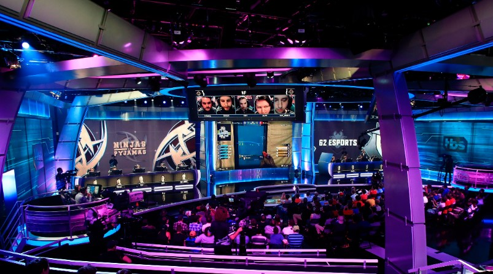
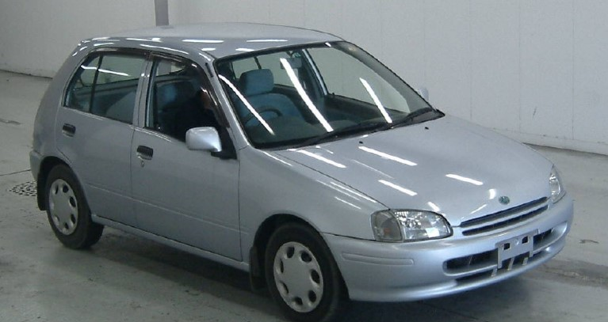

Descubriendo Mi Identidad
LBI
Mi adolesencia fue una etapa tambien de estudio, practicamente todo el tiempo estudie en un colegio cercano a mi casa, Liceo Bautista Ilopango, en el cual a pesar de la decadencia del mismo puede conocer a personas que a dia de hoy son importantes para mi.
Fue durante este tiempo que también descubrí mi pasión por la fotografía. Pasaba horas capturando momentos y escenas de mi vida cotidiana, aprendiendo a ver la belleza en lo ordinario. Esta afición me enseñó a ser más observador y a apreciar los pequeños detalles de la vida.
Ps4
Como muchos adolescentes,pasaba la mayorparte de mi tiempo jugando ya sea solo, con mi hermano o con amigos pero creeria que la epoca que mas me marco fue el call of duty 3 y posteriormente fornite.
Recuerdo que me pasaba viendo a youtubers que hacian contenido relacionado y mi mayor ambicion era ser jugador profesional
Carros
Recuerdo que de las cosas mas memorables para mi fue aprender a manejar, puesto que siempre me habian dicho que cuando tuviera 15 me sacarian la licencia de minoridad y asi fue, mi abuelo me mostro como manejar en un starlet 1998 estandar que compraron solo para que aprendiera.
Gracias a Dios jamas tuve un accidente y un recuerdo ese primer carro con amor 
Mirando hacia atrás, mi adolescencia fue una montaña rusa de emociones y experiencias. Fue un tiempo de autodescubrimiento, de cometer errores y aprender de ellos, de soñar en grande y comenzar a dar pasos hacia esos sueños. Aunque hubo momentos difíciles, también hubo momentos de alegría pura y logros que me llenaron de orgullo.
Esta etapa de mi vida sentó las bases de quien soy hoy, moldeando mis valores, mis pasiones y mis aspiraciones para el futuro. La adolescencia me enseñó que el cambio, aunque a veces aterrador, es una parte natural y emocionante de la vida, y que cada desafío es una oportunidad para crecer y evolucionar.